Modeling a Simple Disease Process
Markov Models
Learning Objectives and Outline
00
Learning Objectives
Discuss pros and cons of decision modeling using decision trees vs. a formal deterministic model
Understand the components and structure of discrete time Markov models
Calculate Markov cycles by hand, using Markov bubble diagram
Apply methods for Markov cycle correction
Outline
01
02
Markov Models
03
Constructing a Markov Model
04
Dominance & extended dominance
05
Comparators
06
CEA thresholds
Modeling a Simple Disease Process
01
A Simple Disease Process
- Suppose we want to model the cost-effectiveness of alternative strategies to prevent a disease from occurring.
- We start with a healthy population of 25 year olds and there are three health states people can experience:
Remain Healthy
Become Sick
Death
A Simple Disease Process
Healthy
Sick
Death
Remaining healthy carries no utility decrement
(utility weight = 1.0 per cycle in healthy state)
Becoming sick carries a 0.25 utility decrement for the remainder of the person’s life (utility weight = 0.75)
Death carries a utility value of 0
A Simple Disease Process
Healthy
Sick
Death
There is no cost associated with remaining healthy.
Becoming sick incurs $1,000 / year in costs.
Becoming sick increases the risk of death by 300%.
There is no cost associated with death.
A Simple Disease Process
A country’s health institute is considering five preventive care strategies that reduce the risk of becoming sick:
| Strategy | Description | Cost |
|---|---|---|
| A | Standard of Care | $25/year |
| B | Additional 4% reduction in risk of becoming sick | $1,000/year |
| C | 12% reduction in risk | $3,100/year |
| D | 8% reduction in risk | $1,550/year |
| E | 8% reduction in risk | $5,000/year |
Model Option 1: Decision Tree
- One option would be to use a decision tree to model the expected utility and costs associated with each strategy.
- Model time horizon: 10 years
- The next slide shows the decision tree for outcomes experienced in the first year.
Model Option 1: Decision Tree
- What limitations do you see?
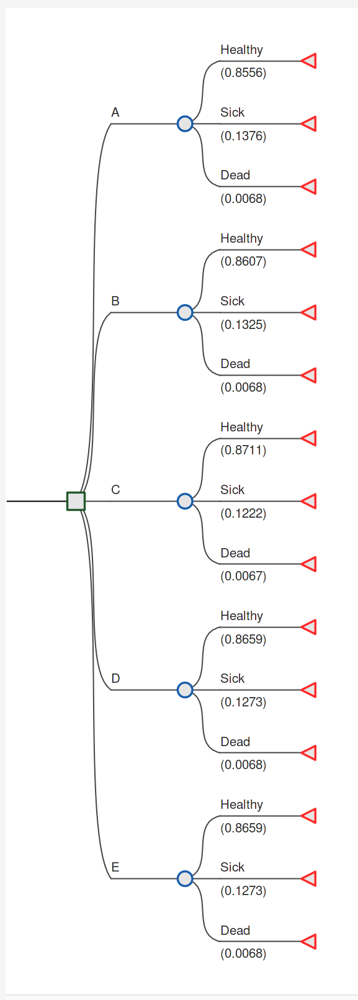
Model Option 1: Decision Tree
- Decision tree for two full cycles.
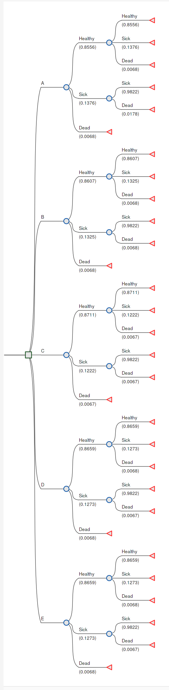
Model Option 1: Decision Tree
- Strategy A decision tree for 5 cycles.
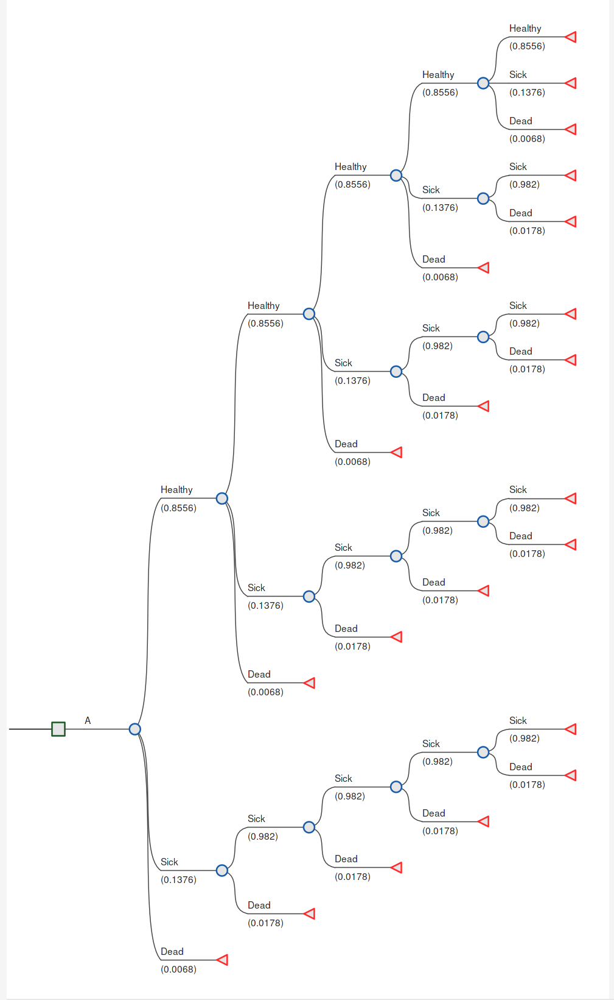
Decision Trees
Pros
- Simple, rapid & can provide insights
- Easy to describe & understand
- Works well with limited time horizon
Disadvantages
- Difficult to include clinical detail
- Elapse of time is not readily evident.
- Difficult to model longer (>1 cycle) time horizons
Decision Trees
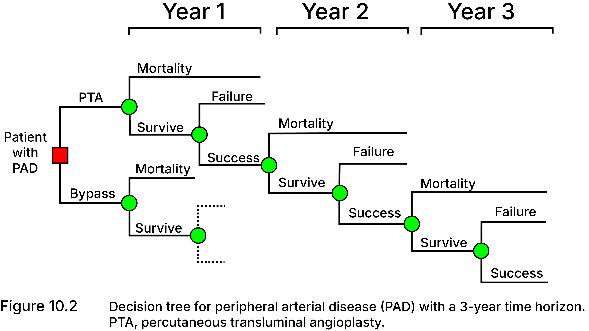
Next Steps
- Ideally we want a modeling approach that can incorporate flexibility and handle the complexities that make decision trees difficult/unwieldy.
Markov Models
02
Markov Models
Common approach in decision analyses that adds additional flexibility.
Pros
- Can model repeated events
- Can model more complex + longitudinal clinical events
- Not computationally intensive; efficient to model and debug
Disadvantages
Markov Models
The advantages of Markov models derive from their structure around mutually exclusive disease states.
These disease states represent the possible states or consequences of strategies or options under consideration.
Because there are a fixed number of disease states the population can be in, there is no need to model complex pathways, as we saw in the decision tree “explosion” a few slides back.
Markov Trees
It is also common to pair a Markov model with a decision tree.1
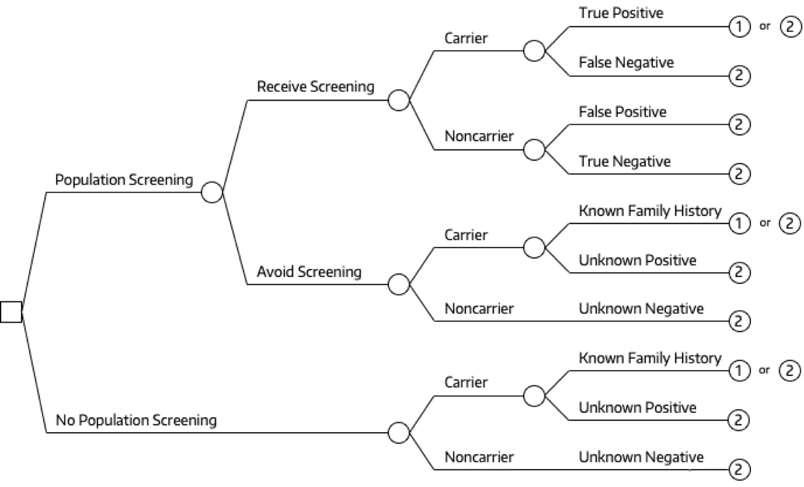
Markov Trees
It is also common to pair a Markov model with a decision tree.1
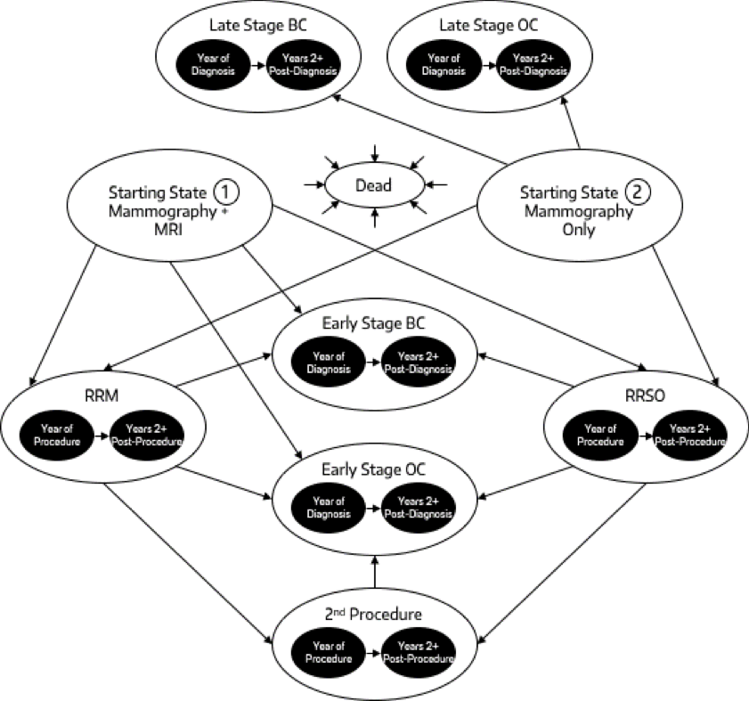
Markov Tree
A simple decision tree is implicit in nearly every decision analysis.
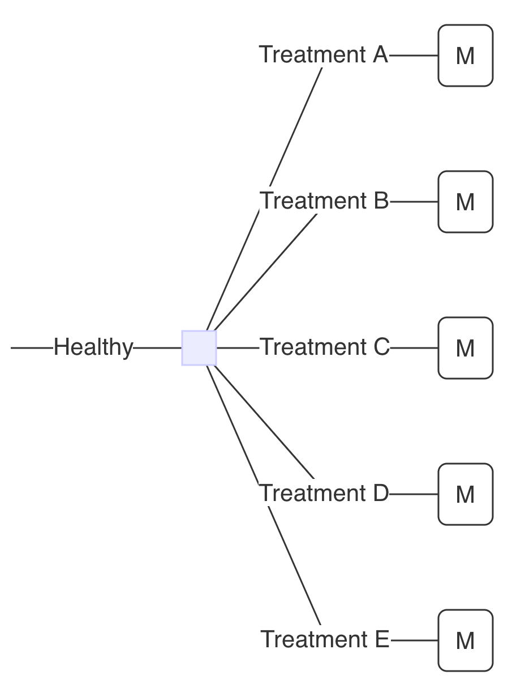
Markov Tree: Example
Treatment A:
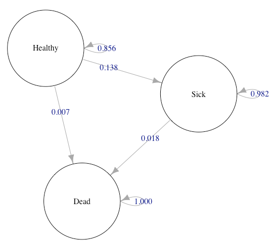
Markov Tree: Example
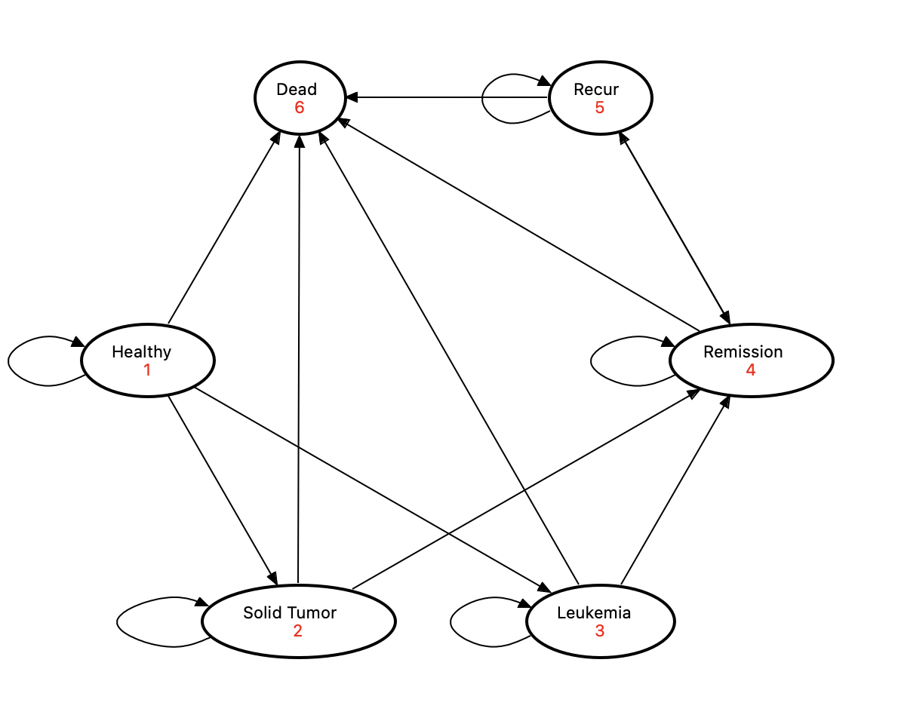
Treatment A:
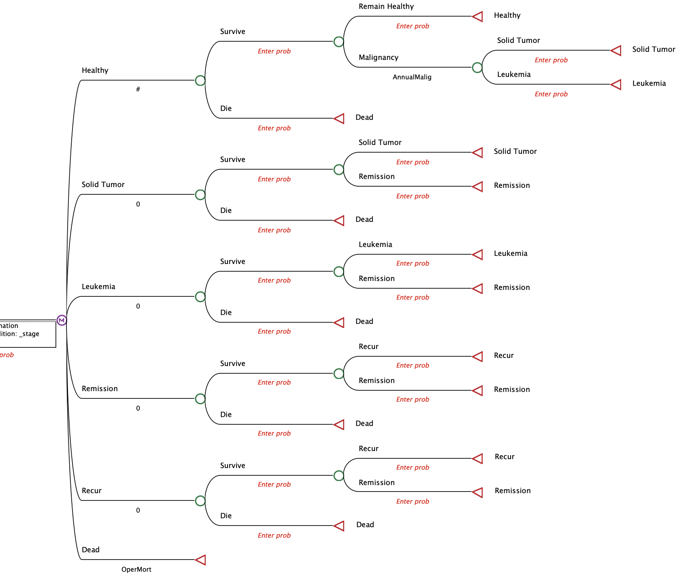
When choosing a model structure…
Things should be made as simple as possible, but not simpler.
Albert Einstein
Constructing a Markov Model
03
Key characteristics
- Allows for health state transitions over time
- Individuals can only exist in one state at a time (mutually exclusive health states)
- At the beginning or end of each cycle, patients transition across health states via transition probabilities & individuals stay in health state for entire cycle length
- Probability of transitioning depends on the current state (“no memory”); (tunnel states can account for this potential limitation)
- Transition probabilities remain constant over time (apart from embedded lifetables)
- Results report “average” of cohort
CYCLE
Minimum amount of time that any individual will spend in a state before possible transition to another state
Steps
1
Define the decision problem
2
Conceptualize the model
3
Parameterize the model
4
Calculate or define the transition probability matrix
5
Run the model
1. Define the Decision Problem
Step 1: Define the Decision Problem
We defined the decision problem earlier in this lecture, so we’ll repeat the basic objectives briefly here.
Step 1: Define the Decision Problem
Goal: model the cost-effectiveness of alternative strategies to prevent a disease from occurring.
| Strategy | Description | Cost |
|---|---|---|
| A | Standard of Care | $25/year |
| B | Additional 4% reduction in risk of becoming sick | $1,000/year |
| C | 12% reduction in risk | $3,100/year |
| D | 8% reduction in risk | $1,550/year |
| E | 8% reduction in risk | $5,000/year |
Step 1: Define the Decision Problem
2. Conceptualize the Markov Model
2. Conceptualize the Markov Model
Two major steps:
2a. Determine health states
2b. Determine transitions
Step 2: Conceptualize the Model
2a. Determine health states
Remain Healthy
Become Sick
Death
Step 2: Conceptualize the Model
2a. Determine health states
Remain Healthy
Become Sick
Death
2b. Determine transitions
- Individuals who become sick cannot transition back to healthy.
“Bubble Diagram”
State transition (“bubble”) diagrams are useful visualizations of a Markov model.
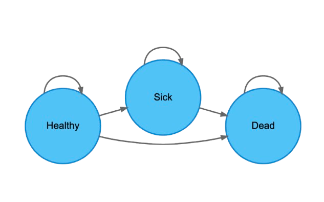
Diagram constructed using the Health State Transition Diagram Builder
3. Parameterize the Model
3. Parameterize the Model
Basic steps
3a. Determine basic model parameters
3b. Curate and define model inputs
3. Parameterize the Model
Basic steps
3a. Determine basic model parameters
- Define the population (e.g., 25 year old females)
- Define the Markov cycle length (e.g., 1-year cycle)
- Define the time horizon (e.g., followed until age 100 or death)
3a. Define the Markov Cycle Length
- Fundamentally, we’re modeling a continuous time process (e.g., progression of disease).
- A discrete time Markov model “breaks up” time into “chunks” (i.e., “cycles”).
- A consequence is that the model will show us what fraction start out a cycle in a given state, and what fraction end up in each state at the end of the cycle.
3a. Define the Markov cycle length
- Suppose we used a one-year cycle for the healthy-sick-dead model.
- Think about the underlying (continuous time) disease process.
- Recall that becoming sick substantially increases the likelihood of death.
- If we’re not careful, what are we (implicitly) assuming can and can’t happen in a single cycle?
3a. Define the Markov Cycle Length
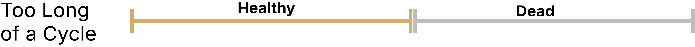
3a. Define the Markov Cycle Length
The challenge of selecting an appropriate cycle length boils down to how we deal with competing risks.
- Competing risks: individuals can transition from their current health state to two or more other health states.
3a. Define the Markov Cycle Length
The challenge of selecting an appropriate cycle length boils down to how we deal with competing risks.
- If we’re not careful, we could effectively rule out the possibility of Healthy Sick Dead within a cycle.
- The model would look like a basic Healthy Dead transition, but they took a detour through Sick along the way!
3a. Define the Markov Cycle Length
| Pros | Cons |
|---|---|
| Can model repeated events | Competing risks are a challenge |
| Can model more complex + longitudinal clinical events | |
| Not computationally intensive; efficient to model and debug |
3a. Define the Markov Cycle Length
- It may be tempting to simply shorten the cycle length (e.g., use 1 day cycle vs. 1 year cycle).
- For a 75 year horizon, how many cycles would that be?
- 27,375!!!
- Any possible issues with this?
3a. Define the Markov Cycle Length
- Shortening the cycle creates a computational challenge.
- Base case requires 27,375 daily cycles.
- Now suppose we want to run 2,000 probabilistic sensitivity analysis model runs.
- We now have 57,750,000 cycle runs to contend with!
3a. Define the Markov Cycle Length
| Pros | Cons |
|---|---|
| Can model repeated events | Can only transition once in a given cycle |
| Can model more complex + longitudinal clinical events | Shortening the cycle can create computational challenges. |
| Not computationally intensive; efficient to model and debug |
3a. Define the Markov Cycle Length
More challenges …
3a. Define the Markov Cycle Length
More challenges …
- Markov models are “memoryless” – they don’t remember what happened before the current cycle.
- If your risk of transition to a sicker health state depends on events that happened earlier in time, the model can’t explicitly account for this.
3a. Define the Markov Cycle Length
More challenges …
- There are workarounds known as “tunnel states” to get around this problem, though these are difficult to do and present their own challenges
- We won’t cover them this week but we can provide references if you want to explore!
3a. Define the Markov Cycle Length
| Pros | Cons |
|---|---|
| Can model repeated events | Can only transition once in a given cycle |
| Can model more complex + longitudinal clinical events | Shortening the cycle can create computational challenges. |
| Not computationally intensive; efficient to model and debug | Shortening cycle can cause “state explosion” if tunnel states are used |
3a. Define the Markov Cycle Length
- It’s also advisable to pick a cycle length that aligns with the clinical/disease timelines of the decision problem.
- Treatment schedules.
- Acute vs. chronic condition.
- Another option is to incorporate “short-run” events that happen early in the course of a disease/intervention within the decision tree, then allow the Markov model to model longer-term health consequences.
3. Parameterize the Model
3b. Curate and define model inputs
3b.i. Source and define the base case values.
3b.ii. Source and define sources of uncertainty.
3. Parameterize the Model
3b. Curate and define model inputs
- Rate of disease onset
- Health state utilities and costs
- Hazard ratios, odds ratios or relative risks for different strategies.
- … and so on.
3. Parameterize the Model
We defined many of the underlying parameters earlier in this lecture, so we’ll repeat them briefly here.
3. Parameterize the Model
- We start with a healthy population of 25 year olds and follow them until age 100 (or death, if earlier).
- Remaining healthy carries no utility decrement (utility weight= 1.0)
- Becoming sick carries a 0.25 utility decrement for the remainder of the person’s life (utility weight = 0.75)
- Death carries a utility weight value of 0.
3. Parameterize the Model
- There is no cost associated with remaining healthy.
- Becoming sick incurs $1,000 / year in costs.
- Becoming sick increases the risk of death by 300%.
3. Parameterize the Model
Each strategy has a different cost and impact on the likelihood of becoming sick.
| Strategy | Description | Cost |
|---|---|---|
| A | Standard of Care | $25/year |
| B | Additional 4% reduction in risk of becoming sick | $1,000/year |
| C | 12% reduction in risk | $3,100/year |
| D | 8% reduction in risk | $1,550/year |
| E | 8% reduction in risk | $5,000/year |
3. Parameterize the Model
It is critical to follow a formal process for parameterizing your model.
- Often, parameters are drawn from the published literature, and it is important to track the source (published value, assumption, etc.) for each model parameter.
- For example, the percent risk reduction parameter for each strategy may come from different clinical trials.
- The parameter governing death from background causes may be derived from mortality data.
3. Parameterize the Model
It is critical to follow a formal process for parameterizing your model.
- Some parameters may just be values (e.g., cost of Strategy A is $25/yr)
- Some parameters may be functions of other parameters.
- For example, suppose we want to follow a cohort of 25 year olds until age 100 or death, if it occurs earlier.
- In that case we have two “fixed” parameters: the starting age, and the maximum age.
- We can use these two parameters to infer the total number of cycles we need to run.
3. Parameterize the Model
It is critical to follow a formal process for parameterizing your model.
- Parameters also have various “flavors”:
- Probabilities
- Rates
- Hazard ratios
- Costs
- Utilities
- etc.
3. Parameterize the Model
It is critical to follow a formal process for parameterizing your model.
All of the above highlight the importance of adopting a formal process for naming and tracking the value, source, and uncertainty distribution of all model parameters in one place.
We recommend a structured approach based on parameter naming conventions and parameter tables.
3. Parameterize the Model
Naming conventions:
Parameter Table
Note: Only a subset of model parameters are shown in table.
| Parameter Table | ||||||
| param | base_case | formula | description | notes | distribution | source |
|---|---|---|---|---|---|---|
| n_age_init | 25.00 | Age at baseline | Modeling Parameter | |||
| n_age_max | 100.00 | Maximum age of followup | Modeling Parameter | |||
| u_H | 1.00 | Utility weight of healthy (H) | beta(shape1 = 200, shape2 = 3) | Leech et al. (2022) | ||
| u_S | 0.75 | Utility weight of sick (S) | beta(shape1 = 130, shape2 = 45) | Leech et al. (2022) | ||
| c_S | 1000.00 | Annual cost of sick (S) | gamma(shape = 44.4, scale = 22.5) | Graves et al. (2022) | ||
| c_trtA | 25.00 | Cost of treatment A | gamma(shape = 12.5, scale = 2) | Martin et al. (2022) | ||
| c_trtB | 1000.00 | Cost of treatment B | gamma(shape = 12, scale = 83.3) | Assumption | ||
| c_trtC | 3100.00 | Cost of treatment C | gamma(shape = 36.144, scale = 83) | Assumption | ||
| n_cycles | 75.00 | (n_age_max - n_age_init) | Time horizon | |||
param column is the short name of the parameter
Note: Only a subset of model parameters are shown in table.
print_table <- function(target) {
params_raw[rows_to_show,1:7] %>% gt() %>%
tab_header(title = "Parameter Table") %>%
sub_missing(missing_text="") %>%
tab_style(
style = list(
cell_fill(color = "#e1efda")
),
locations = cells_body(
rows = c(1:length(rows_to_show))
)
) %>%
tab_style(
style = list(
cell_fill(color = "#fce4d6")
),
locations = cells_body(
rows = c(length(rows_to_show))
)
) %>%
tab_style(
style = list(
cell_fill(color = "#ed7d31")
),
locations = cells_body(
columns = c(2),
rows = c(length(rows_to_show))
)
) %>%
tab_style(
style = list(
cell_borders(
sides = c("left","right"),
color = "darkred",
weight = px(2)
)),
locations = cells_body(
columns = c(target)
)
) %>%
tab_style(
style = list(
cell_borders(
sides = c("top"),
color = "darkred",
weight = px(2)
)),
locations = cells_body(
rows = c(1),
columns = c(target)
)
) %>%
tab_style(
style = list(
cell_borders(
sides = c("bottom"),
color = "darkred",
weight = px(2)
)),
locations = cells_body(
rows = length(rows_to_show),
columns = c(target)
)
)
}
print_table(1)| Parameter Table | ||||||
| param | base_case | formula | description | notes | distribution | source |
|---|---|---|---|---|---|---|
| n_age_init | 25.00 | Age at baseline | Modeling Parameter | |||
| n_age_max | 100.00 | Maximum age of followup | Modeling Parameter | |||
| u_H | 1.00 | Utility weight of healthy (H) | beta(shape1 = 200, shape2 = 3) | Leech et al. (2022) | ||
| u_S | 0.75 | Utility weight of sick (S) | beta(shape1 = 130, shape2 = 45) | Leech et al. (2022) | ||
| c_S | 1000.00 | Annual cost of sick (S) | gamma(shape = 44.4, scale = 22.5) | Graves et al. (2022) | ||
| c_trtA | 25.00 | Cost of treatment A | gamma(shape = 12.5, scale = 2) | Martin et al. (2022) | ||
| c_trtB | 1000.00 | Cost of treatment B | gamma(shape = 12, scale = 83.3) | Assumption | ||
| c_trtC | 3100.00 | Cost of treatment C | gamma(shape = 36.144, scale = 83) | Assumption | ||
| n_cycles | 75.00 | (n_age_max - n_age_init) | Time horizon | |||
base_case is the parameter value for the base case.
Note: Only a subset of model parameters are shown in table.
| Parameter Table | ||||||
| param | base_case | formula | description | notes | distribution | source |
|---|---|---|---|---|---|---|
| n_age_init | 25.00 | Age at baseline | Modeling Parameter | |||
| n_age_max | 100.00 | Maximum age of followup | Modeling Parameter | |||
| u_H | 1.00 | Utility weight of healthy (H) | beta(shape1 = 200, shape2 = 3) | Leech et al. (2022) | ||
| u_S | 0.75 | Utility weight of sick (S) | beta(shape1 = 130, shape2 = 45) | Leech et al. (2022) | ||
| c_S | 1000.00 | Annual cost of sick (S) | gamma(shape = 44.4, scale = 22.5) | Graves et al. (2022) | ||
| c_trtA | 25.00 | Cost of treatment A | gamma(shape = 12.5, scale = 2) | Martin et al. (2022) | ||
| c_trtB | 1000.00 | Cost of treatment B | gamma(shape = 12, scale = 83.3) | Assumption | ||
| c_trtC | 3100.00 | Cost of treatment C | gamma(shape = 36.144, scale = 83) | Assumption | ||
| n_cycles | 75.00 | (n_age_max - n_age_init) | Time horizon | |||
formula defines model parameter formulas for parameters that are functions of other model parameters.
Note: Only a subset of model parameters are shown in table.
| Parameter Table | ||||||
| param | base_case | formula | description | notes | distribution | source |
|---|---|---|---|---|---|---|
| n_age_init | 25.00 | Age at baseline | Modeling Parameter | |||
| n_age_max | 100.00 | Maximum age of followup | Modeling Parameter | |||
| u_H | 1.00 | Utility weight of healthy (H) | beta(shape1 = 200, shape2 = 3) | Leech et al. (2022) | ||
| u_S | 0.75 | Utility weight of sick (S) | beta(shape1 = 130, shape2 = 45) | Leech et al. (2022) | ||
| c_S | 1000.00 | Annual cost of sick (S) | gamma(shape = 44.4, scale = 22.5) | Graves et al. (2022) | ||
| c_trtA | 25.00 | Cost of treatment A | gamma(shape = 12.5, scale = 2) | Martin et al. (2022) | ||
| c_trtB | 1000.00 | Cost of treatment B | gamma(shape = 12, scale = 83.3) | Assumption | ||
| c_trtC | 3100.00 | Cost of treatment C | gamma(shape = 36.144, scale = 83) | Assumption | ||
| n_cycles | 75.00 | (n_age_max - n_age_init) | Time horizon | |||
description provides a text description of the parameter.
| Parameter Table | ||||||
| param | base_case | formula | description | notes | distribution | source |
|---|---|---|---|---|---|---|
| n_age_init | 25.00 | Age at baseline | Modeling Parameter | |||
| n_age_max | 100.00 | Maximum age of followup | Modeling Parameter | |||
| u_H | 1.00 | Utility weight of healthy (H) | beta(shape1 = 200, shape2 = 3) | Leech et al. (2022) | ||
| u_S | 0.75 | Utility weight of sick (S) | beta(shape1 = 130, shape2 = 45) | Leech et al. (2022) | ||
| c_S | 1000.00 | Annual cost of sick (S) | gamma(shape = 44.4, scale = 22.5) | Graves et al. (2022) | ||
| c_trtA | 25.00 | Cost of treatment A | gamma(shape = 12.5, scale = 2) | Martin et al. (2022) | ||
| c_trtB | 1000.00 | Cost of treatment B | gamma(shape = 12, scale = 83.3) | Assumption | ||
| c_trtC | 3100.00 | Cost of treatment C | gamma(shape = 36.144, scale = 83) | Assumption | ||
| n_cycles | 75.00 | (n_age_max - n_age_init) | Time horizon | |||
Note: Only a subset of model parameters are shown in table.
notes is an optional column where you add additional notes or context for the parameter.
Note: Only a subset of model parameters are shown in table.
| Parameter Table | ||||||
| param | base_case | formula | description | notes | distribution | source |
|---|---|---|---|---|---|---|
| n_age_init | 25.00 | Age at baseline | Modeling Parameter | |||
| n_age_max | 100.00 | Maximum age of followup | Modeling Parameter | |||
| u_H | 1.00 | Utility weight of healthy (H) | beta(shape1 = 200, shape2 = 3) | Leech et al. (2022) | ||
| u_S | 0.75 | Utility weight of sick (S) | beta(shape1 = 130, shape2 = 45) | Leech et al. (2022) | ||
| c_S | 1000.00 | Annual cost of sick (S) | gamma(shape = 44.4, scale = 22.5) | Graves et al. (2022) | ||
| c_trtA | 25.00 | Cost of treatment A | gamma(shape = 12.5, scale = 2) | Martin et al. (2022) | ||
| c_trtB | 1000.00 | Cost of treatment B | gamma(shape = 12, scale = 83.3) | Assumption | ||
| c_trtC | 3100.00 | Cost of treatment C | gamma(shape = 36.144, scale = 83) | Assumption | ||
| n_cycles | 75.00 | (n_age_max - n_age_init) | Time horizon | |||
distribution specifies the uncertainty distribution for the parameter. It is used for probabilistic sensitivity analyses, which we cover in our intermediate (week-long) workshop.
Note: Only a subset of model parameters are shown in table.
| Parameter Table | ||||||
| param | base_case | formula | description | notes | distribution | source |
|---|---|---|---|---|---|---|
| n_age_init | 25.00 | Age at baseline | Modeling Parameter | |||
| n_age_max | 100.00 | Maximum age of followup | Modeling Parameter | |||
| u_H | 1.00 | Utility weight of healthy (H) | beta(shape1 = 200, shape2 = 3) | Leech et al. (2022) | ||
| u_S | 0.75 | Utility weight of sick (S) | beta(shape1 = 130, shape2 = 45) | Leech et al. (2022) | ||
| c_S | 1000.00 | Annual cost of sick (S) | gamma(shape = 44.4, scale = 22.5) | Graves et al. (2022) | ||
| c_trtA | 25.00 | Cost of treatment A | gamma(shape = 12.5, scale = 2) | Martin et al. (2022) | ||
| c_trtB | 1000.00 | Cost of treatment B | gamma(shape = 12, scale = 83.3) | Assumption | ||
| c_trtC | 3100.00 | Cost of treatment C | gamma(shape = 36.144, scale = 83) | Assumption | ||
| n_cycles | 75.00 | (n_age_max - n_age_init) | Time horizon | |||
Note: Only a subset of model parameters are shown in table.
source provides the source for the parameter. It could be a published research article, an assumption, or just simply an unsourced modeling parameter (e.g., the starting age of the modeled cohort).
| Parameter Table | ||||||
| param | base_case | formula | description | notes | distribution | source |
|---|---|---|---|---|---|---|
| n_age_init | 25.00 | Age at baseline | Modeling Parameter | |||
| n_age_max | 100.00 | Maximum age of followup | Modeling Parameter | |||
| u_H | 1.00 | Utility weight of healthy (H) | beta(shape1 = 200, shape2 = 3) | Leech et al. (2022) | ||
| u_S | 0.75 | Utility weight of sick (S) | beta(shape1 = 130, shape2 = 45) | Leech et al. (2022) | ||
| c_S | 1000.00 | Annual cost of sick (S) | gamma(shape = 44.4, scale = 22.5) | Graves et al. (2022) | ||
| c_trtA | 25.00 | Cost of treatment A | gamma(shape = 12.5, scale = 2) | Martin et al. (2022) | ||
| c_trtB | 1000.00 | Cost of treatment B | gamma(shape = 12, scale = 83.3) | Assumption | ||
| c_trtC | 3100.00 | Cost of treatment C | gamma(shape = 36.144, scale = 83) | Assumption | ||
| n_cycles | 75.00 | (n_age_max - n_age_init) | Time horizon | |||
4. Calculate or define the transition probability matrix
Defining the Transition Probability Matrix
The transition probability matrix is a square matrix that defines the probability of transitioning from one health state to another health state in a single time step.
Constructing the matrix is a fairly technical, but fairly straightforward process.
- We will skip over this process for now, but come back to it tomorrow!
Transition Probability Matrix
| Healthy | Sick | Dead | |
|---|---|---|---|
| Healthy | 0.856 | 0.138 | 0.007 |
| Sick | 0 | 0.982 | 0.018 |
| Dead | 0 | 0 | 1 |
5. Run the Model
Executing the model requires two inputs
Health State Occupancy
\quad Transition Probability Matrix
Health State Occupancy \quad \quad
\quad Transition Probability Matrix
Health State Occupancy \quad \quad
\quad Transition Probability Matrix
\quad \quad \quad \quad \quad \quad \quad \quad
Health State Occupancy \quad \quad
\quad Transition Probability Matrix
\quad Health State Occupancy at End of Cycle
s =
P =
Health State Occupancy \quad \quad
\quad Transition Probability Matrix
\quad Health State Occupancy at End of Cycle
s =
P =
Health State Occupancy \quad \quad
\quad Transition Probability Matrix
\quad Health State Occupancy at End of Cycle
s =
H S D
1 0 0P =
H S D
H 0.856 0.138 0.007
S 0.000 0.982 0.018
D 0.000 0.000 1.000Health State Occupancy \quad \quad
\quad Transition Probability Matrix
\quad Health State Occupancy at End of Cycle
s =
H S D
1 0 0P =
H S D
H 0.856 0.138 0.007
S 0.000 0.982 0.018
D 0.000 0.000 1.000 H S D
H 0.856 0.138 0.007
S 0.000 0.982 0.018
D 0.000 0.000 1.000\quad Health State Occupancy at End of Cycle
Markov Trace
Health State Occupancy Over Ten Cycles
cycle H S D
0 1.00000 0.00000 0.000000
1 0.85600 0.13800 0.007000
2 0.73274 0.25364 0.015476
3 0.62722 0.35020 0.025171
4 0.53690 0.43045 0.035865
5 0.45959 0.49679 0.047371
6 0.39341 0.55127 0.059531
7 0.33676 0.59564 0.072207
8 0.28826 0.63139 0.085286
9 0.24675 0.65981 0.098669
10 0.21122 0.68198 0.112273Calculate cycles by hand
In-class example
- A new drug was developed for cancer patients in remission to decrease their chance of relapse
- This drug is $10,000 per year (2022 USD)
- Research question: Is the new drug cost-effective compared to the current standard of care?
- Let’s say we want to model this over a 4-year time horizon
In-class example
| Standard of Care | New Drug | |
|---|---|---|
| Healthy to Stage 1 | 5% | |
| Healthy to Stage 2 | 2% | |
| Healthy to Stage 3 | 1% | |
| Stage 1 to Stage 2 | 10% | |
| Stage 1 to Remission | 25% | |
| Stage 2 to Stage 1 | 5% | |
| Stage 2 to Stage 3 | 15% | |
| Stage 2 to Remission | 20% | |
| Stage 3 to Stage 2 | 5% | |
| Stage 3 to Death | 45% | |
| Remission to Stage 1 | 10% | 2% |
| Remission to Stage 2 | 5% | 1% |
In-class example
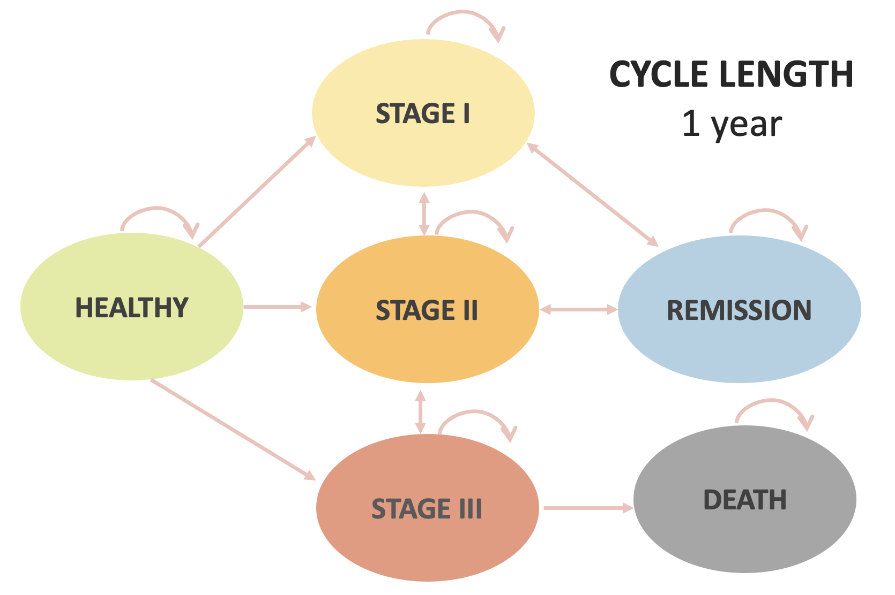
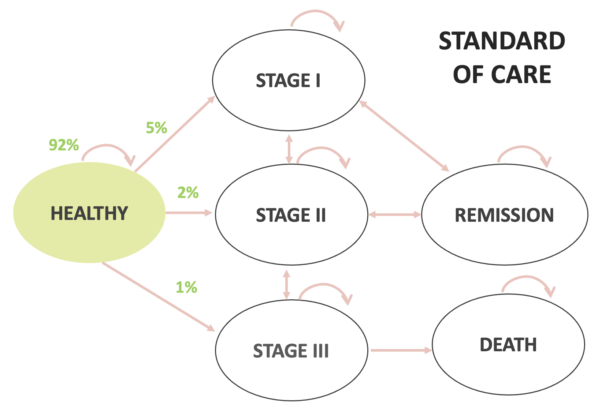
In-class example
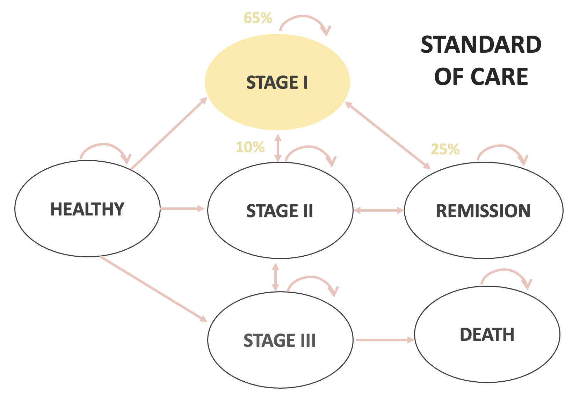
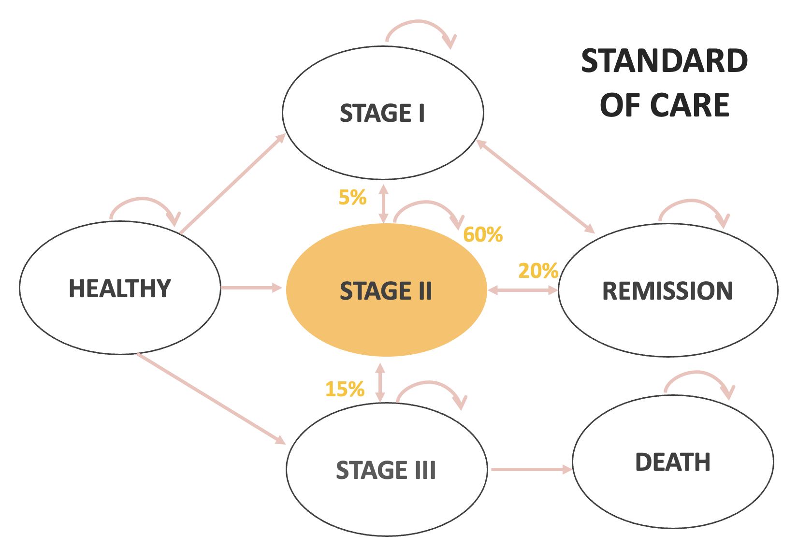
In-class example
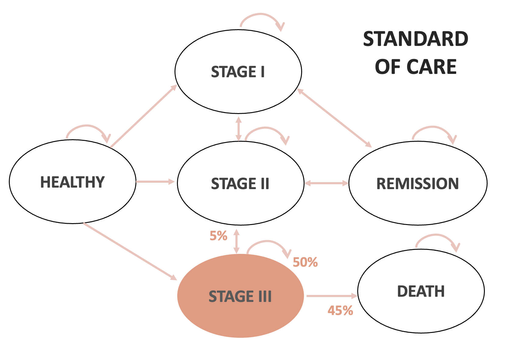
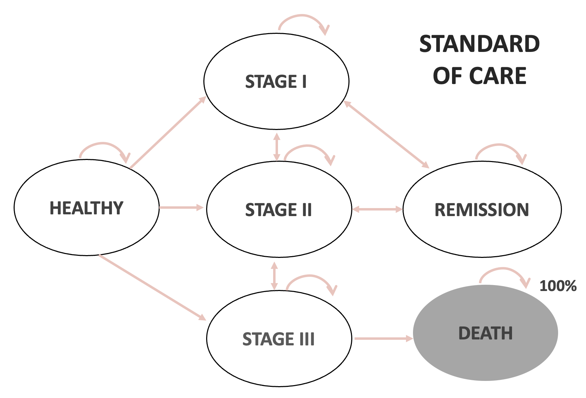
In-class example
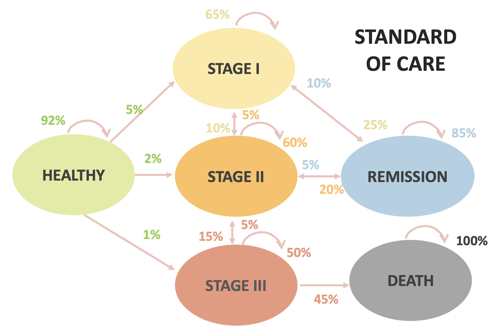
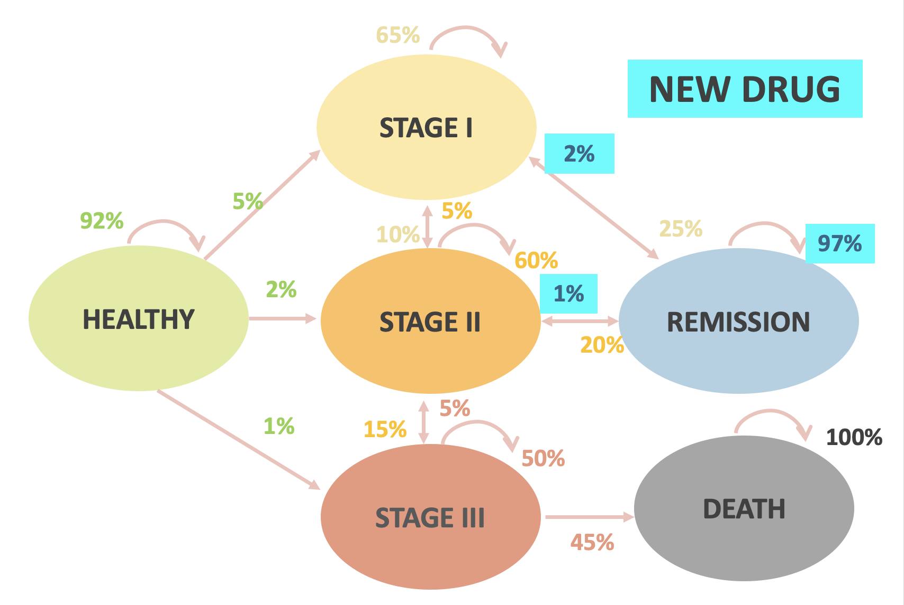
In-class example
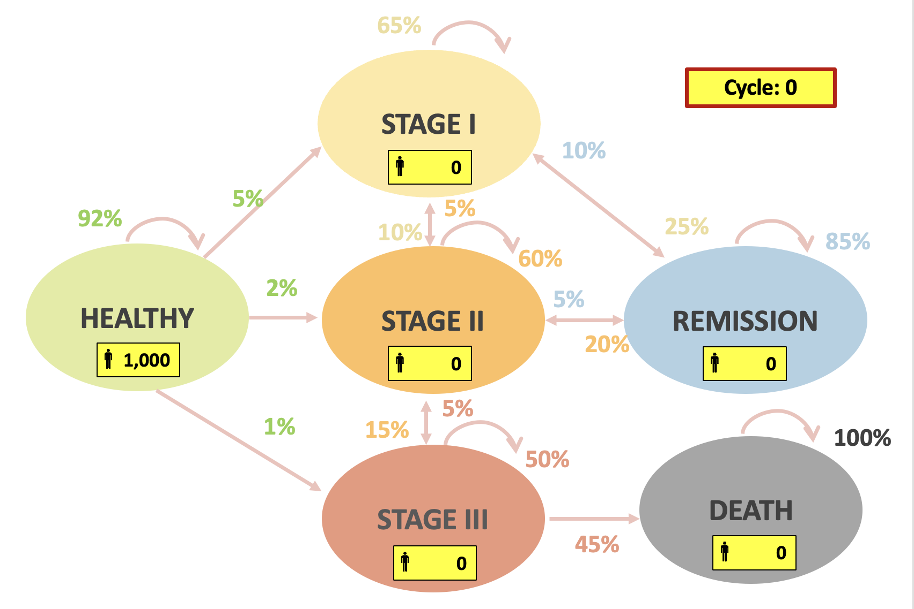
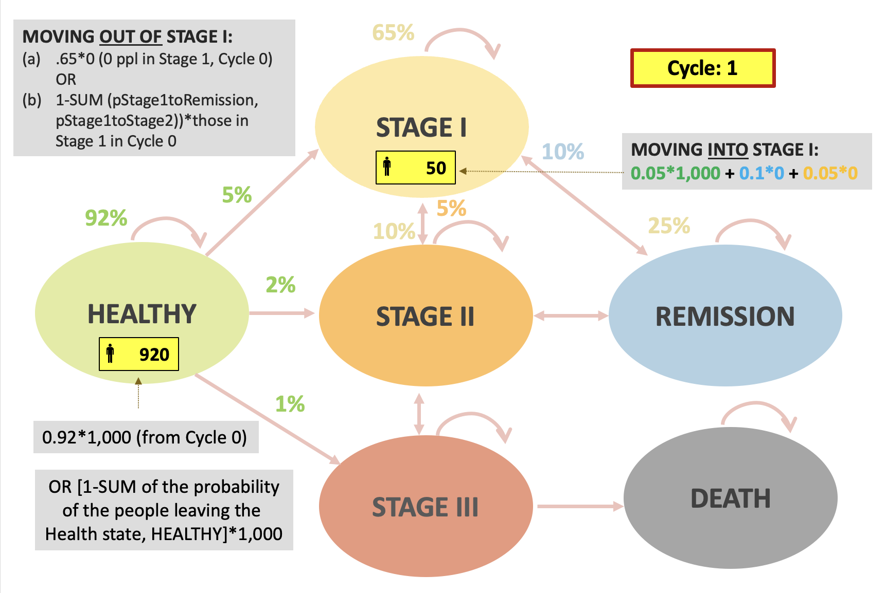
In-class example
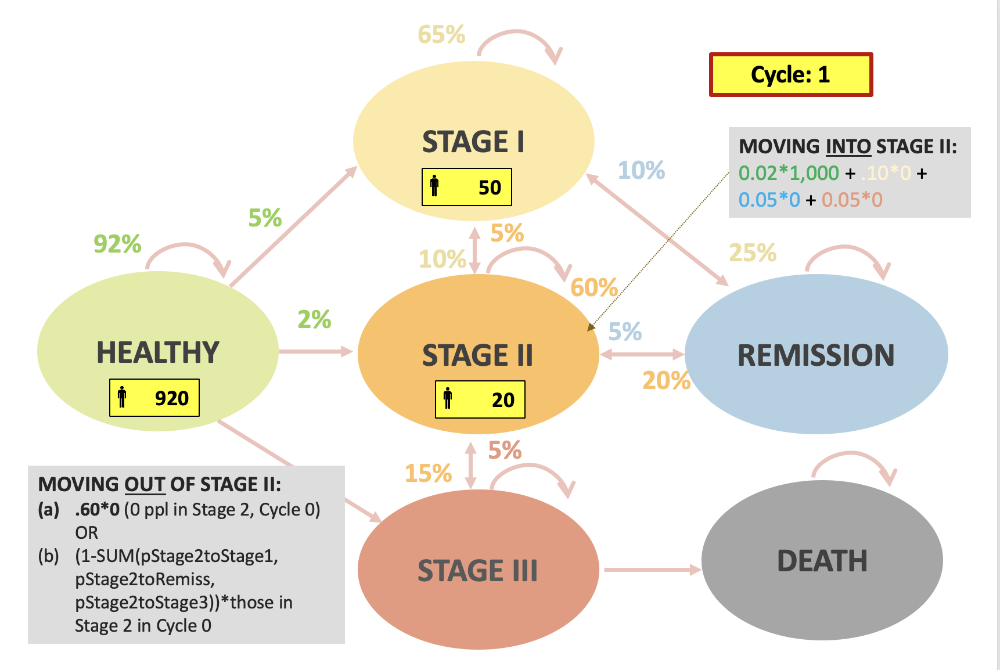
Calculating Outcomes
An example Markov Trace (75 year horizon)
| Cycle | Healthy | Sick | Dead |
|---|---|---|---|
| 0 | 1.000 | 0.000 | 0.000 |
| 1 | 0.856 | 0.138 | 0.007 |
| 2 | 0.732 | 0.253 | 0.015 |
| 3 | 0.626 | 0.349 | 0.025 |
| 4 | 0.536 | 0.429 | 0.035 |
| 5 | 0.458 | 0.495 | 0.046 |
| … | … | … | … |
| 75 (End) | 0 | 0.282 | 0.718 |
Markov Traces
- Often we are modeling several competing strategies.
- Each strategy has its own transition probability matrix.
- Therefore, each strategy will have it’s own Markov trace.
Calculating Outcomes
- With our markov traces complete, we can calculate expected outcomes (e.g., costs, QALYs, DALYs, etc.).
- Much like we did with decision trees, we need to define “payoffs” for each health state.
Defining Payoffs
- Cost outcomes: Cost of being healthy, sick, dead (including any additional costs of treatment/intervention, if applicable).
- QALY outcomes: Utility weight of being healthy (usually 1.0), sick, dead (usually 0.0).
- DALY outcomes: Disability weights of being sick (YLD) and remaining life expectancy based on reference life table (YLL)
Defining Payoffs
- We can calculate the total payoff for each cycle by multiplying the number or fraction of the cohort in each health state by its payoff value, and adding them together.
Example Markov Trace (two cycles):
| Cycle | Healthy | Sick | Dead |
|---|---|---|---|
| 0 | 1.000 | 0.000 | 0.000 |
| 1 | 0.856 | 0.138 | 0.007 |
Example: Life Years
- We’ll build our example using a simple outcome: expected life years under a given strategy.
- Payoffs:
- Healthy: 1.0
- Sick: 1.0 [they’re still alive!]
- Dead: 0.0
Example: Life Years
- To get the total “payoff” for a given cycle, we multiply the fraction of the cohort in a given health state by the payoff associated with that health state.
- Do this for each health state, and add them together to get the total.
| Cycle | Healthy | Sick | Dead | LY |
|---|---|---|---|---|
| 0 | 1.000 | 0.000 | 0.000 | |
| 1 | 0.856 | 0.138 | 0.007 |
Example: Life Years
What is the LY “payoff” for Cycle 0?
| Cycle | Healthy | Sick | Dead | LY |
|---|---|---|---|---|
| 0 | 1.000 | 0.000 | 0.000 | |
| 1 | 0.856 | 0.138 | 0.007 |
Example: Life Years
What is the LY “payoff” for Cycle 0?
| Cycle | Healthy | Sick | Dead | LY |
|---|---|---|---|---|
| 0 | 1.000 | 0.000 | 0.000 | 1.0 = 1.0 * 1.0 + 0.0 * 1.0 + 0.0 * 0.0 |
| 1 | 0.856 | 0.138 | 0.007 |
Example: Life Years
What is the LY “payoff” for Cycle 1?
| Cycle | Healthy | Sick | Dead | LY |
|---|---|---|---|---|
| 0 | 1.000 | 0.000 | 0.000 | 1.0 |
| 1 | 0.856 | 0.138 | 0.007 | 0.994 = 0.856 * 1.0 + 0.138 * 1.0 + 0.007 * 0.0 |
… and so on.
Example: Life Years
| Cycle | Healthy | Sick | Dead | LY |
|---|---|---|---|---|
| 0 | 1.000 | 0.000 | 0.000 | 1 |
| 1 | 0.856 | 0.138 | 0.007 | 0.993 |
| 2 | 0.732 | 0.253 | 0.015 | 0.985 |
| 3 | 0.626 | 0.349 | 0.025 | 0.975 |
| 4 | 0.536 | 0.429 | 0.035 | 0.965 |
| 5 | 0.458 | 0.495 | 0.046 | 0.954 |
| … | … | … | … | |
| 75 (End) | 0 | 0.282 | 0.718 | 0.282 |
Example: Costs
- Now suppose we want to calculate costs.
- Payoffs:
- Healthy: $0
- Sick: $1,000
- Dead: $0
Example: Costs
What is the Cost “payoff” for Cycle 0?
| Cycle | Healthy | Sick | Dead | Cost |
|---|---|---|---|---|
| 0 | 1.000 | 0.000 | 0.000 | |
| 1 | 0.856 | 0.138 | 0.007 |
Example: Costs
What is the Cost “payoff” for Cycle 0?
| Cycle | Healthy | Sick | Dead | Cost |
|---|---|---|---|---|
| 0 | 1.000 | 0.000 | 0.000 | 0 = 1.00 * 0 + 0.0 * 1000 + 0.0 * 0 |
| 1 | 0.856 | 0.138 | 0.007 |
Example: Costs
What is the cost “payoff” for Cycle 1?
| Cycle | Healthy | Sick | Dead | Cost |
|---|---|---|---|---|
| 0 | 1.000 | 0.000 | 0.000 | 0 |
| 1 | 0.856 | 0.138 | 0.007 | 138 = 0.856*0+0.138*1000+0.007*0 |
… and so on.
Other Outcomes
- We can repeat a similar process for health outcomes (e.g., QALYs, YLDs) by multiplying the “payoff” (e.g., utility weight, disability weight) for a given health state by the fraction of the cohort in that health state in the cycle.
Calculating Total Expected Outcomes
Total Outcomes
Total Life Years
Let’s look at the Markov trace and cycle outcomes for the Life Year outcome.
| Cycle | Healthy | Sick | Dead | LY (single cycle) |
|---|---|---|---|---|
| 0 | 1.000 | 0.000 | 0.000 | 1 |
| 1 | 0.856 | 0.138 | 0.007 | 0.993 |
| 2 | 0.732 | 0.253 | 0.015 | 0.985 |
| 3 | 0.626 | 0.349 | 0.025 | 0.975 |
| 4 | 0.536 | 0.429 | 0.035 | 0.965 |
| 5 | 0.458 | 0.495 | 0.046 | 0.954 |
| … | … | … | … | |
| 75 (End) | 0 | 0.282 | 0.718 | 0.282 |
Life years
We can create a new column that accumulates life years over each cycle.
| Cycle | Healthy | Sick | Dead | LY (single cycle) | LY (cumulative) |
|---|---|---|---|---|---|
| 0 | 1.000 | 0.000 | 0.000 | 1 | 1 |
| 1 | 0.856 | 0.138 | 0.007 | 0.993 | 1 + 0.993 = 1.993 |
| 2 | 0.732 | 0.253 | 0.015 | 0.985 | |
| 3 | 0.626 | 0.349 | 0.025 | 0.975 | |
| 4 | 0.536 | 0.429 | 0.035 | 0.965 | |
| 5 | 0.458 | 0.495 | 0.046 | 0.954 | |
| … | … | … | … | … | |
| 75 (End) | 0 | 0.282 | 0.718 | 0.282 |
Life years
| Cycle | Healthy | Sick | Dead | LY (single cycle) | LY (cumulative) |
|---|---|---|---|---|---|
| 0 | 1.000 | 0.000 | 0.000 | 1 | 1 |
| 1 | 0.856 | 0.138 | 0.007 | 0.993 | 1.993 |
| 2 | 0.732 | 0.253 | 0.015 | 0.985 | 1 + 0.993 + 0.985 = 2.978 |
| 3 | 0.626 | 0.349 | 0.025 | 0.975 | |
| 4 | 0.536 | 0.429 | 0.035 | 0.965 | |
| 5 | 0.458 | 0.495 | 0.046 | 0.954 | |
| … | … | … | … | … | |
| 75 (End) | 0 | 0.282 | 0.718 | 0.282 |
Life years
The cumulative LYs for an individual starting in the Healthy state is 44.825
Note that this is within a 75 years time horizon
| Cycle | Healthy | Sick | Dead | LY (single cycle) | LY (cumulative) |
|---|---|---|---|---|---|
| 0 | 1.000 | 0.000 | 0.000 | 1 | 1 |
| 1 | 0.856 | 0.138 | 0.007 | 0.993 | 1.993 |
| 2 | 0.732 | 0.253 | 0.015 | 0.985 | 2.978 |
| 3 | 0.626 | 0.349 | 0.025 | 0.975 | 3.954 |
| 4 | 0.536 | 0.429 | 0.035 | 0.965 | 4.919 |
| 5 | 0.458 | 0.495 | 0.046 | 0.954 | 5.872 |
| … | … | … | … | … | … |
| 75 (End) | 0 | 0.282 | 0.718 | 0.282 | 44.825 |
Total Outcomes
We can do a similar exercise to get total costs, total QALYs, total DALYs, etc.
However, it’s not that simple. There are some extra complications we have to deal with.
- Discounting
- Cycle correction
Cycle correction
The problem
In real life, events could occur at any points in a given cycle, but a Markov model assumes all events occur either at the beginning or end of each cycle
Time is continuous, so are survival/event-free survival curves
When we discretize time by using a fixed cycle length, we can make two assumptions
- Suppose this is a simple Well \rightarrow Dead process
The problem
Assuming death happens at the end of cycle (A)
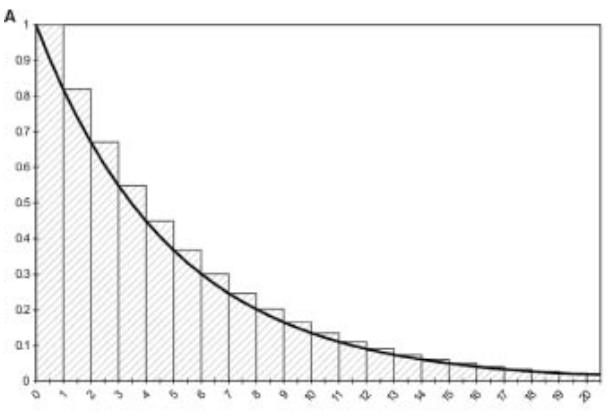
Overestimates state membership in Well
Assuming death happens at the start of cycle (B)
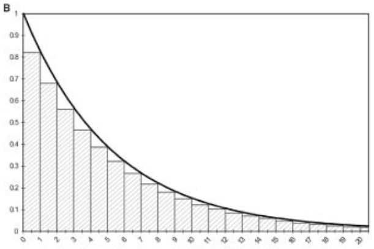
Underestimates state membership in Well
The problem
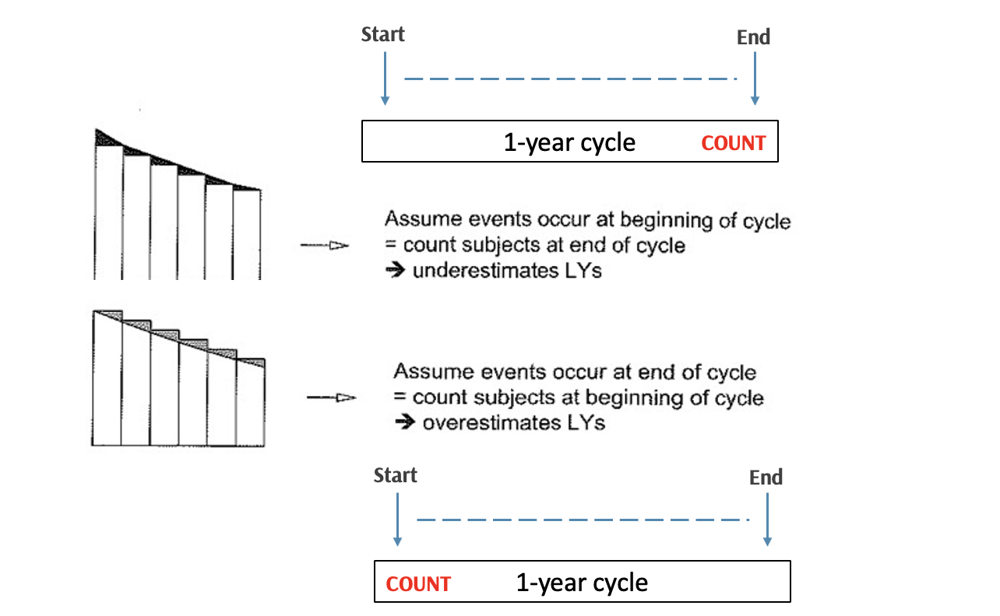
Half-cycle correction
Half-cycle correction
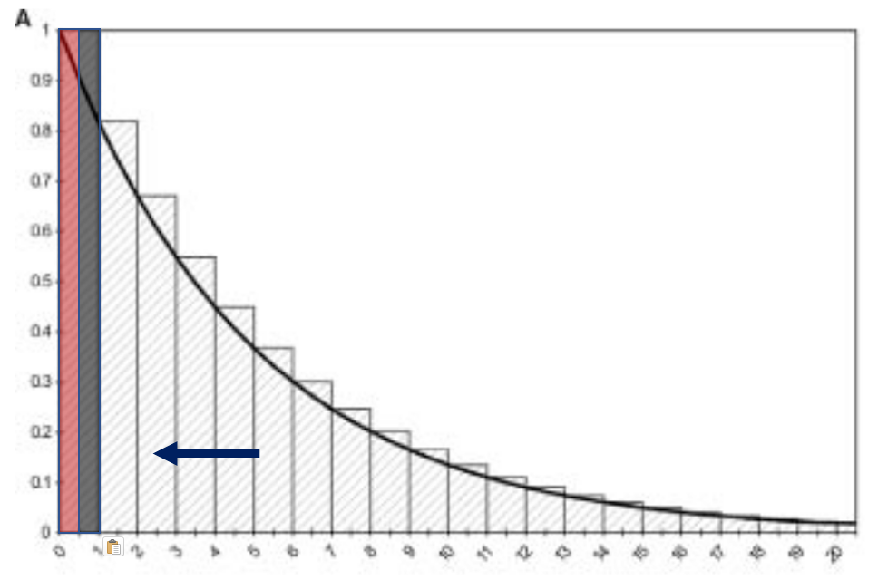
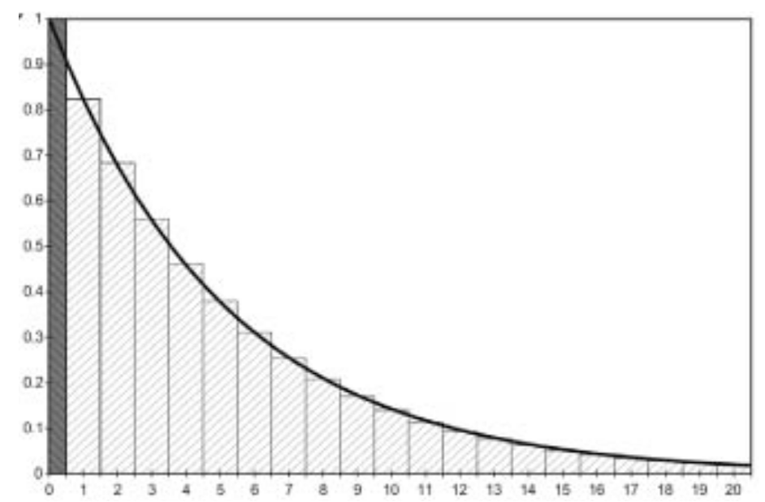
Half-cycle correction
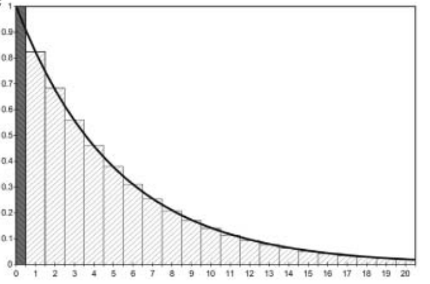
Multiply the outcomes by 1/2 in the first and last cycle.
Shifting the computed, discrete state membership curve to the left by 1/2 cycle.
Essentially assuming that events happen in the middle of cycle
Half-cycle correction
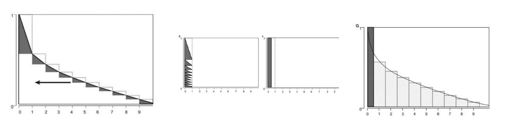
Apply cycle correction methods to our markov trace…
Half-cycle correction
- Multiply the outcomes by 1/2 in the first and last cycle.
| Cycle | Healthy | Sick | Dead | LY (single cycle, adjusted) | LY (cumulative) |
|---|---|---|---|---|---|
| 0 | 1.000 | 0.000 | 0.000 | 1*0.5 | 0.5 |
| 1 | 0.856 | 0.138 | 0.007 | 0.993 | 0.5 + 0.993 = 1.493 |
| 2 | 0.732 | 0.253 | 0.015 | 0.985 | 2.478 |
| 3 | 0.626 | 0.349 | 0.025 | 0.975 | 3.454 |
| 4 | 0.536 | 0.429 | 0.035 | 0.965 | 4.419 |
| 5 | 0.458 | 0.495 | 0.046 | 0.954 | 5.372 |
| … | … | … | … | … | … |
| 75 (End) | 0 | 0.282 | 0.718 | 0.282 *0.5 | 44.184 |
This number is smaller than our original estimate without half-cycle correction (44.825!)
Summary
- Once we have total (discounted, half-cycle corrected) outcomes for each strategy, we can turn to conducting incremental cost-effectiveness analysis.
- We covered these methods yesterday!
Markov Models
| Pros | Cons |
|---|---|
| Can model repeated events | Can only transition once in a given cycle |
| Can model more complex + longitudinal clinical events | Shortening the cycle can create computational challenges. |
| Not computationally intensive; efficient to model and debug | Shortening cycle can cause “state explosion” if tunnel states are used |